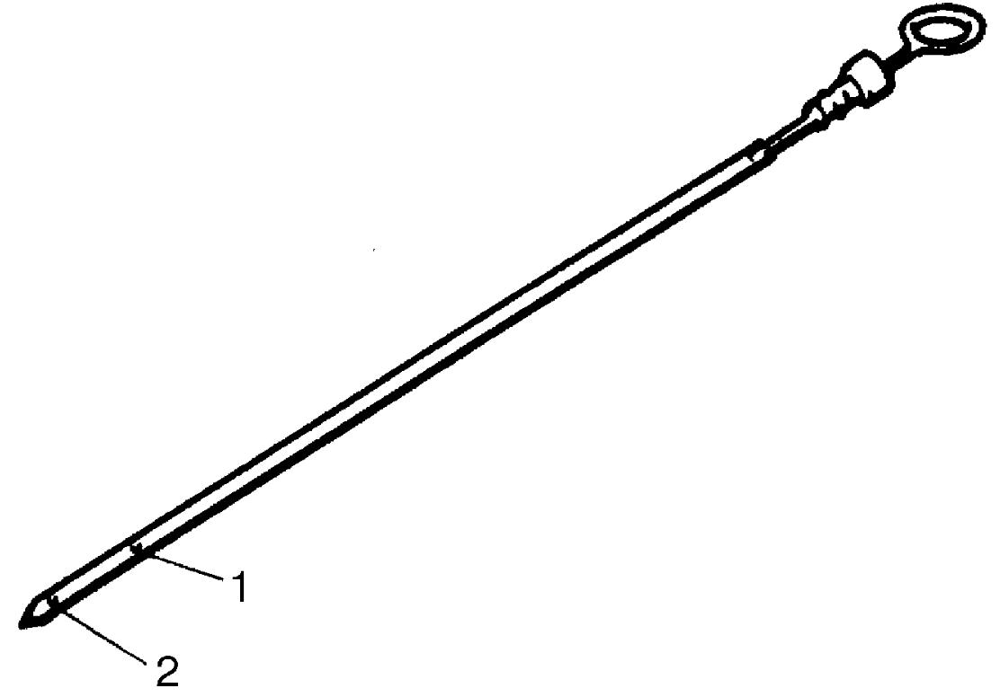

1E
| Oil Pressure Check |
NOTE:
Before checking oil pressure, check the following points.
•Oil level in oil pan
If oil level is low, add oil up to FULL level mark (hole) (1) on oil level gauge.

•Oil quality
If oil is discolored or deteriorated, change it.
•Oil leakage
If leakage is found, repair leaky point.
If oil level is low, add oil up to FULL level mark (hole) (1) on oil level gauge.

 "Expand image")
| 2. | LOW level mark (hole) |
If oil is discolored or deteriorated, change it.
•Oil leakage
If leakage is found, repair leaky point.
1)For M/T model, place gear shift lever in “Neutral” and apply parking brake.
For A/T model, place select lever in “P” and apply parking brake.
For A/T model, place select lever in “P” and apply parking brake.
2)Remove oil pressure switch.
3)Install special tools to threaded hole where oil pressure switch was removed.
 "Expand image")
4)Start engine and warm it up to normal operating temperature.
5)Measure oil pressure at 1,500 rpm and 4,000 rpm respectively.
Oil pressure specification
110 – 190 kPa (1.1 – 1.9 kgf/cm2, 16.0 – 27.6 psi, 1.1 – 1.9 bar) at 1,500 rpm
310 – 390 kPa (3.2 – 4.0 kgf/cm2, 45.0 – 56.6 psi, 3.1 – 3.9 bar) at 4,000 rpm
6)Stop engine and remove special tools.
7)Install oil pressure switch.
8)Check DTC.
If any DTC is displayed, clear DTC.
If any DTC is displayed, clear DTC.
9)Start engine and check oil pressure switch for oil leakage.